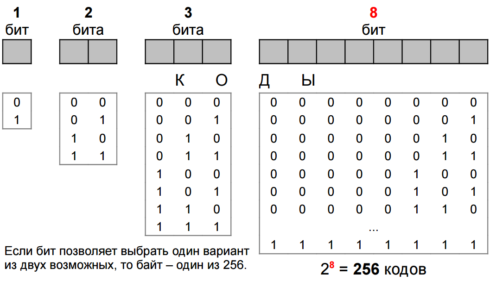
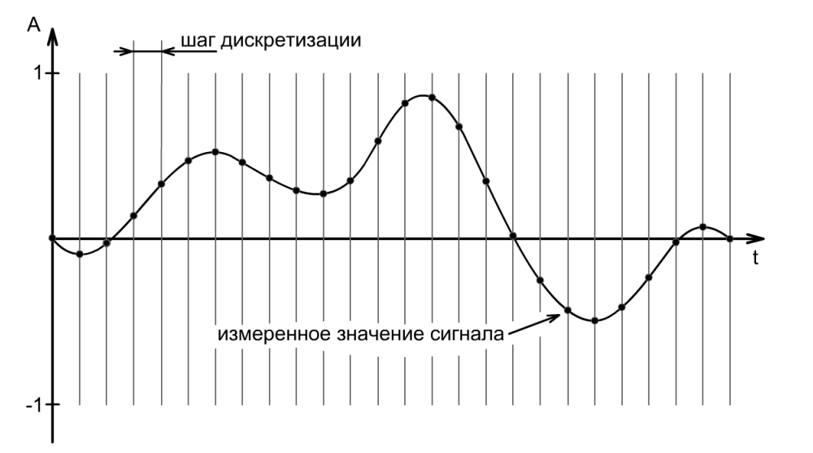
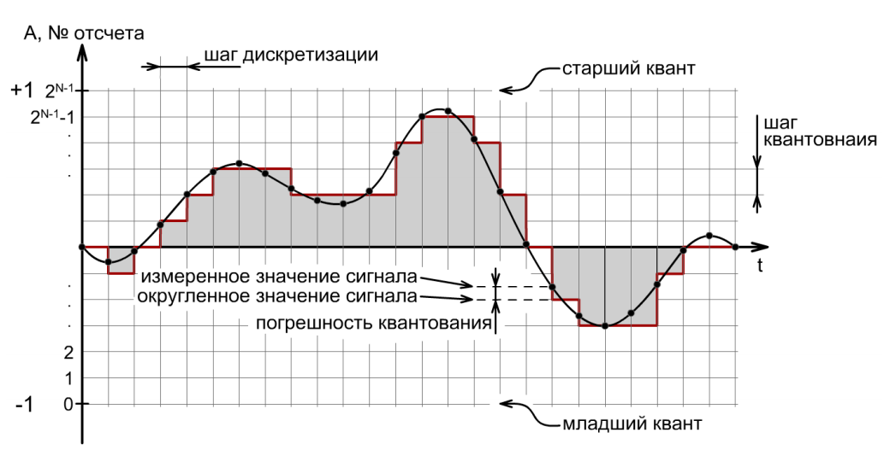

— это получение фактов, сведений и данных о свойствах, структуре или взаимодействии объектов и явлений окружающего нас мира.
— это переход от одной формы представления информации к другой, более удобной для хранения, передачи или обработки.
Компьютер может обрабатывать только информацию, представленную в числовой форме, поэтому любая другая информация (звуки, изображения, показания приборов и т.д.), предназначенная для обработки на компьютере, должна быть преобразована в числовую форму (закодирована).
Оценка количества информации — важная проблема.
Объективные способы измерения информации
Сообщение о том, что произошло одно событие из двух равновероятных, несет 1 бит информации.
В компьютере бит кодируется физическим состоянием носителя информации: намагничено или не намагничено, есть ток или его нет.
| 1 байт | 8 бит; |
| 1 килобайт | 1024 байта; |
| 1 мегабайт | 1024 килобайта; |
| 1 гигабайт | 1024 мегабайта; |
| 1 терабайт | 1024 гигабайта. |
\(n=p^i\), где n – количество возможных кодов, i – содержащееся в одном коде количество информации, p – количество альтернативных значений «бита»

В текстовых файлах для хранения каждого символа отводится один или два байта, а кодирование выполняется с помощью специальных таблиц, в которых каждому символу соответствует определенное число.
Русский язык можно закодировать с помощью восьмибитной таблицы.
Все чаще для представления текстовых файлов применяется двухбайтовая кодировка Unicode, позволяющая использовать \(2^{16}\) различных символов, т.е. более 65000.
Растровые изображения представляют собой однослойную сетку точек называемых, пикселями.
Глубина цвета — максимальное число цветов для данного файла.
Глубина цвета определяет количество бит информации, приходящееся для описания цвета пикселя. Выражается единицей бит на пиксель.
Звук — это колебания воздуха.

При преобразовании звук в электрический сигнал наблюдается плавно изменяющееся напряжение.
Преобразование в последовательность двоичных чисел происходит с помощью аналого-цифрового преобразователя.

Чем выше частота дискретизации (количество отсчетов за секунду) и чем больше уровней квантования (количества разрядов для записи каждого отсчета), тем точнее будет представлен звук. Но при этом увеличивается и размер звукового файла.